전자캐드기능사 (2013-04-14 기출문제)
1과목: 전기전자공학(대략구분)
1. 저항을 R이라고 하면 컨덕턴스 G[℧]는 어떻게 표현되는가?
- R2
- R
- 1/R2
- 1/R
(정답률: 80%)

2. 쌍안정 멀티바이브레이터에 대한 설명 중 적합하지 않은 것은?
- 플립플롭회로이다.
- 분주기, 2진 계수회로 등에 많이 사용된다.
- 입력 트리거 펄스 1개마다 1개의 출력펄스를 얻는다.
- 저항과 병렬로 연결되는 스피드업(speed up) 콘덴서가 2개 쓰인다.
(정답률: 61%)
3. 집적회로(IC)의 특징으로 적합하지 않은 것은?
- 대전력용으로 주로 사용
- 소형경량
- 고 신뢰도
- 경제적
(정답률: 81%)
4. 이상적인 펄스 파형 최대 진폭 Amax의 90[%] 되는 부분에서 10[%] 되는 부분까지 내려가는데 소요되는 시간은?
- 지연시간
- 상승시간
- 하강시간
- 오버슈트 시간
(정답률: 89%)
5. 자기인덕턴스가 L1, L2이고 상호인덕턴스가 M, 결합계수가 1일 때의 관계는?
- L1L2=M
- L1L2＞M
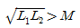
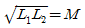
(정답률: 65%)
6. R-L 직렬회로의 시정수에 해당되는 것은?
- 1/2R
- 2R
- R/L
- L/R
(정답률: 62%)
7. 40[db]의 전압이득을 가진 증폭기에 10[mV]의 전압을 입력에 가하면 출력전압은 몇 [V] 인가?
- 0.1[V]
- 1[V]
- 10[V]
- 100[V]
(정답률: 39%)
8. 다음 중 연산증폭회로에서 되먹임 저항을 되먹임 콘덴서로 변경한 것은?
- 미분기 회로
- 적분기 회로
- 가산기 회로
- 감산기 회로
(정답률: 56%)
9. 어떤 정류기 부하양단의 직류전압이 300[V]이고, 맥동률이 2[%]이면 교류성분의 실효값은?
- 2[V]
- 4.24[V]
- 6[V]
- 8.48[V]
(정답률: 66%)
10. 클리퍼(clipper)에 대한 설명으로 가장 옳은 것은?
- 임펄스를 증폭하는 회로이다.
- 톱니파를 증폭하는 회로이다.
- 구형파를 증폭하는 회로이다.
- 파형의 상부 또는 하부를 일정한 레벨로 잘라내는 회로이다.
(정답률: 63%)
11. B급 푸시풀 증폭기에 대한 설명 중 옳은 것은?
- 최대 양극효율은 33.6[%]이다.
- 고주파 전압증폭용으로 널리 쓰인다.
- 우수고조파가 상쇄되어 찌그러짐이 적다.
- 출력변성기의 철심이 직류에 의해 포화된다.
(정답률: 54%)
12. 저항 R=5[Ω], 인덕턴스 L=100[mH], 정전용량 C=100[μF]의 RLC 직렬회로에 60[Hz]의 교류전압을 가할 때 회로의 리액턴스 성분은?
- 저항
- 유도성
- 용량성
- 임피던스
(정답률: 61%)
13. 회로에서 Vo를 구하면 몇 [V] 인가? (단, I2>>I8, VBE=0.6[V],IC≈IE임)
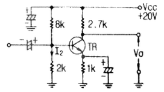
- 9.82[V]
- 10.82[V]
- 11.82[V]
- 12.82[V]
(정답률: 54%)
14. 전압안전화 회로에서 리니어(linear)방식과 스위칭(switching)방식의 장ㆍ단점 비교가 옳은 것은?
- 효율은 리니어 방식보다 스위칭 방식이 좋다.
- 회로구성에서 리니어 방식은 복잡하고 스위칭 방식은 간단하다.
- 중량은 리니어 방식은 가볍고 스위칭 방식은 무겁다.
- 전압정밀도는 리니어 방식은 나쁘고 스위칭 방식은 좋다.
(정답률: 50%)
15. 펄스의 상승 부분에서 진동의 정도를 말하며 높은 주파수 성분에 공진하기 때문에 생기는 것은?
- Sag
- Storage Time
- Under Shoot
- Ringing
(정답률: 65%)
2과목: 전자계산기일반(대략구분)
16. 구형파의 입력을 가하여 폭이 좁은 트리거 펄스를 얻는데 사용되는 회로는?
- 미분회로
- 적분회로
- 발진회로
- 클리핑회로
(정답률: 52%)
17. 다음 10진수 756.5를 16진수로 옳게 표현한 것은?
- 2F4.8
- 2E4.8
- 2F4.5
- 2E4.5
(정답률: 45%)
18. 중앙처리장치 중 제어장치의 기능으로 가장 알맞은 것은?
- 정보를 기억한다.
- 정보를 연산한다.
- 정보를 연산하고, 기억한다.
- 명령을 해석하고, 실행한다.
(정답률: 73%)
19. 기억장치의 주소를 4비트(bit)로 구성할 경우 나타낼수 있는 최대 경우의 수는?
- 8
- 16
- 32
- 64
(정답률: 71%)
20. 논리함수 (A+B)(A+C)를 불 대수에 의해 간략화 한것은?
- A+BC
- AB+C
- AC+BC
- AB+BC
(정답률: 72%)
21. 프로그램에 대한 설명으로 틀린 것은?
- 컴퓨터가 이해할 수 있는 언어를 프로그래밍이라 한다.
- 프로그램을 작성하는 일을 프로그래밍이라 한다.
- 프로그래밍 언어에는 C, 베이직, 포토샵 등이 있다.
- 컴퓨터가 행동하도록 단계적으로 지시하는 명령문의 집합체를 프로그램이라 한다.
(정답률: 73%)
22. 제어장치 중 다음에 실행될 명령어의 위치를 기억하고 있는 레지스터는?
- 범용 레지스터
- 프로그램 카운터
- 메모리 버퍼 레지스터
- 번지 해독기
(정답률: 67%)
23. 다음 명령어 형식 중 틀린 것은?
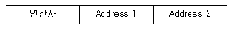
- 주소부는 2개로 구성되어 있다.
- 명령어 형식은 명령코드부와 operand(주소)부로 되어 있다.
- 주소부는 동작 지시뿐 아니라 주소부의 형태를 함께 표현한다.
- 주소부는 처리할 데이터가 어디에 있는지를 표현한다.
(정답률: 60%)
24. 미국 표준 코드로서 Data 통신에 많이 사용되는 자료의 표현 방식은?
- BCD 코드
- ASCII 코드
- EBCDIC 코드
- GRAY 코드
(정답률: 80%)
25. 명령어 내의 주소부에 실제 데이터가 저장된 장소의 주소를 가진 기억장소의 주소를 표현한 방식은?
- 즉시 주소 지정방식
- 직접 주소 지정방식
- 암시적 주소 지정방식
- 간접 주소 지정방식
(정답률: 43%)
26. 컴퓨터의 연산 결과를 나타나는데 사용되며, 연산값의 부호 및 오버플로우 발생 유무를 표시하는 레지스터는?
- 데이터 레지스터
- 상태 레지스터
- 누산기
- 연산 레지스터
(정답률: 68%)
27. 운영체제의 종류가 아닌 것은?
- MS-DOS
- WINDOWS
- UNIX
- P-CAD
(정답률: 77%)
28. C 언어의 변수명으로 적합하지 않은 것은?
- KIM50
- ABC
- 5POP
- E182U3
(정답률: 69%)
29. CAD 시스템의 입력 장치로 사용될 수 없는 것은?
- 키보드
- 마우스
- 디지타이저
- 플로터
(정답률: 78%)
30. CAD 시스템을 사용하여 얻을 수 있는 특징이 아닌 것은?
- 도면의 품질이 좋아진다.
- 도면 작성 시간이 길어진다.
- 설계 과정에서 능률이 향상된다.
- 수치 결과에 대한 정확성이 증가한다.
(정답률: 86%)
3과목: 전자제도(CAD) 이론(대략구분)
31. 다음 그림에서 콘덴서 용량과 오차 값으로 옳은 것은?
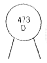
- 0.047μF ± 0.25%
- 0.047μF ± 0.5%
- 0.47μF ± 0.25%
- 0.47μF ± 0.5%
(정답률: 59%)
32. PCB에서 잡음 방지 대책에 대한 설명으로 옳지 않은 것은?
- 가능한 패턴을 짧게 배선한다.
- 패턴을 최대한 굵게 배선한다.
- 패턴을 가늘게 배선하고, 단층 기판이 다층 기판보다 노이즈가 덜 심하다.
- 아날로그 회로와 디지털 회로부분은 분리하여 실장 배선한다.
(정답률: 70%)
33. 세라믹 콘덴서의 부품 표면에 102J로 표시된 경우 용량은?
- 1[μF]
- 0.1[μF]
- 0.01[μF]
- 0.001[μF]
(정답률: 61%)
34. PCB Artwork에서 하나의 부품을 배치하였을 때, 부품이 갖는 특성 요소와 거리가 먼 것은?
- 부품 색깔
- 부품 번호
- 부품 치수
- 부품 명
(정답률: 79%)
35. 회로도 작성시 선과 선이 전기적으로 접속되는 지점에 표시하는 것은?
- Junction
- Bus entry
- No connect
- Alias
(정답률: 74%)
36. 인쇄회로기판(PCB) 설계 후 최종적으로 추출 되는 데이터 파일 중 인쇄회로기판을 제작할 수 있는 데이터 파일은?
- DXF 파일
- EDIF 파일
- Project 파일
- Gerber 파일
(정답률: 75%)
37. 다음 중 디스플레이 (display) 장치로 볼 수 없는 것은?
- 모니터
- LCD 모니터
- 디지타이저
- 비디오프로젝트
(정답률: 72%)
38. 그림과 같은 부품 기호와 관련 있는 것은?
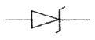
- 제너 다이오드
- 터널 다이오드
- 정류 다이오드
- 가변용량 다이오드
(정답률: 86%)
39. 인쇄기로기판의 제조공정에서 접착이 용이하도록 처리 된 작업 패널 위에 드라이 필름(Photo Sensitive Dry Film Resist : 감광선 사진 인쇄 막)을 일정한 온도와 압력으로 압착 도포하는 공정을 무엇이라 하는가?
- 스크러빙(Scrubbing : 정면)
- 노광
- 라미네이션(Lamination)
- 현상
(정답률: 71%)
40. 다음 KS(Korean Industrial Standards) 부문별 기호 중 전기 부문을 나타내는 기호는?
- KS A
- KS B
- KS C
- KS D
(정답률: 80%)
41. 일반적인 고주파회로를 설계할 때 유의사항과 거리가 먼 것은?
- 배선의 길이는 가급적 짧게 한다.
- 배선이 꼬인 것은 저항으로 간주한다.
- 회로의 중요한 요소에는 바이패스 콘덴서를 삽입한다.
- 유도 가능한 고주파 전송선로는 다른 신호선과 평행하지 않게 한다.
(정답률: 67%)
42. 손으로 그린 스케치를 CAD 시스템으로 입력할 때 필요한 장치는?
- 마우스(Mouse)
- 트랙볼(Track ball)
- 디지타이저(Digitizer)
- 이미지 스캐너(Image scanner)
(정답률: 64%)
43. 표준 도형을 등록해 놓고 변동 부분의 수피를 입력하면 도형이 수치에 맞도록 변하게 하는 것은?
- 수치제어, 장치
- 파라메트릭 설계
- 오토 라우팅 설계
- 자동 제도 시스템
(정답률: 56%)
44. 회로를 그릴 때에는 불러서 쓰기 위해 도 기호들을 만들어 저장해 두는 파일은?
- 라이브러리(Library)
- 시스템(System)
- 배치(Batch)
- 편집(Edit)
(정답률: 85%)
45. 회로도 작성시 물리적인 관련이나 연결이 있는 부품 사이에 나타내는 선은?
- 실선
- 파선
- 치수선
- 일정쇄선
(정답률: 54%)
46. 인쇄회로기판에서 부품의 단자 또는 도체 상호 간을 접속하시 위해 구멍(Hole)의 주위에 만든 측정한 도체 부분이 납땜에 될 수 있도록 처리하는 것은?
- 실크스크린
- Drill(구멍 가공)
- 패턴
- 납 마스크
(정답률: 59%)
47. 축적이 1/2인 도면에서 부품기호가 1cm의 길이를 가졌다면 실제의 부품 길이는?
- 3cm
- 2cm
- 0.5cm
- 1cm
(정답률: 68%)
48. 다음 중 프린트 기판의 종류라고 할 수 없는 것은?
- 종이페놀기판
- 세라믹기판
- 유리 에폭시기판
- 알루미늄 도금기판
(정답률: 54%)
49. 다음 고정저항에 대한 설명 중 옳지 않은 것은?
- 탄소 피막 저항 : 탄소 저항이라고도 하며 가격이 저렴하여 일반적으로 사용된다.
- 권선 저항 : 저항값이 높은 저항기로 소전력용으로 사용된다.
- 모듈 저항 : 메탈 글레이즈를 사용한 저항기를 모듈한 것이다.
- 솔리드 저항 : 기계적 내구성이 크고 고저항에서도 단선될 염려가 없다.
(정답률: 67%)
50. 능동 부품(active component)의 능동적 기능이라고 없는 것은?
- 신호의 증폭
- 신호의 발진
- 신호의 중계
- 신호의 변환
(정답률: 76%)
51. 다음 중 NS가 뜻하는 것은?
- 축척을 나타냄
- 배척을 나타냄
- 실척을 나타냄
- 비례척이 아님
(정답률: 78%)
52. 인쇄회로기판을 설계할 때의 유의하여야 할 사항 중 옳지 않은 것은?
- 기판 구성 시 부품의 배치는 일반적으로 회로도를 중심으로 배치함을 원칙으로 한다.
- 부품의 부피와 피치(pitch)를 확인하여 적절한 부착위치를 설정한다.
- 배선은 최대한 길게 하는 것이 다른 배선이나 부품의 영향을 적게 받는다.
- 취급하는 전력 용량, 주파수 대역 및 신호 형태별로 기판을 나누거나 커넥터를 분리하여 설계한다.
(정답률: 79%)
53. 다음 중 설계 진행 과정을 눈으로 바로 확인 가능한 장치는?
- 모니터
- 하드 디스크
- CPU
- 메모리
(정답률: 88%)
54. 네트리스트를 생성하기 위한 준비단계로 볼 수 없는 것은?
- DRC 실행 확인
- Annotation 실행 확인
- 프로젝트 생성의 이상 여부 확인
- 거버파일 생성 확인
(정답률: 67%)
55. 그림과 같이 4색으로 표시되어 있을 때 저항 값은?
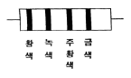
- 25[kΩ]
- 35[kΩ]
- 45[kΩ]
- 65[kΩ]
(정답률: 75%)
56. 디지털 회로면의 제도 방법으로 옳지 않은 것은?
- 여러 가닥의 배선이 같은 방향으로 이동할 때는 버스선을 이용한다.
- 아날로그 부분과 전위레벨이 다르므로 도면에서 이들 회로를 격리하여 그린다.
- 아날로그 부분의 유도현상 영향을 고려하여 전원선을 함께 그린다.
- D/A 변환기 출력부에 디지털 성분 제거를 위한 저역통과 필터를 접속한다.
(정답률: 60%)
57. 전자CAD 프로그램 중 스케메틱(Schematic)에서 새로운 부품을 생성하고자 할 때 필요 없는 것은?
- 부품의 외형
- 부품의 이름
- 부품의 핀 이름
- 부품의 참조기호
(정답률: 63%)
58. 트랜지스터에 2 S A 735라고 표시되어 있을 때 A가 나타내는 것은?
- pnp형 고주파용
- pnp형 저주파용
- npn형 고주파용
- npn형 저주파용
(정답률: 71%)
59. 다음 전기, 전자용 부품의 기호 중 퓨즈에 해당하는 것은?
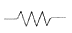
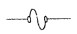
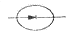
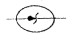
(정답률: 81%)
60. 다음 중 도면의 효율적 관리를 위해 마이크로필름을 이용하는 이유가 아닌 것은?
- 종이에 비해 보존성이 좋다.
- 재료비에 절감시킬 수 있다.
- 통일된 크기로 복사 할 수 있다.
- 복사 시간이 짧지만 복원력이 낮다.
(정답률: 78%)